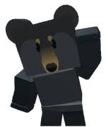
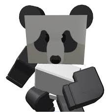
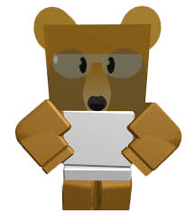

Bears & Questlines
What are Bears, and What do They do?
Bears are NPC's (Non-Player Characters) That are located across the mountain that is the Bee Swarm Map. The first bear that you will encounter is going to be black bear (Located Below). Bears will give you quests, which involve you going across the Bee Swarm map and completing various tasks. The most of the time involve getting pollen from different feilds or different color flowers.




Black Bear
Mother Bear
Panda Bear
Science Bear
Images By Onett-BSS Wiki
Black Bear
Black bear can be found in the sarting area next the the red HQ. He will give the first questline, which if you complete the quests that he gives you, he will give you a silver egg. If you complete his questline after that, he will give you a gold egg, then the questline after will give youa diamond egg. The second to last questline will give you a star jelly, which will automatically give you a gifted bee. For the final questline, the quests will be the hardest, with the last quest being htat you have to collect about 50 Milloin pollen from every feild in the game except for the ant feild. You also need to collect 1billion red pollen and 1 billion blue pollen.
Mother Bear
Motherbear will be located at the top of sunflower feild. She gives one questline, and all of the quests include feeding bees and leveling them up. At the end of the questline, mother bear will give you a star treat. You can give this star treat to any of your bees. I would prefer giving to one fo your event bees, since you can get gifted common, rares, epics, legendaries, and mythic bees ffrom star jellies and royal jellies. For the last quest of mother bear's, you must Raise a Bee to Level 10. Raise 5 Bees to Level 9. Raise 15 Bees to Level 8. Feed 10000 Treats to your Bees. Feed 250 Sunflower Seeds to your Bees. Feed 250 Pineapples to your Bees. Feed 250 Strawberries to your Bees. Feed 250 Blueberries to your Bees.
Panda Bear
Panda bear can be located in the 5 bee zone. Panda bear gives quest that include killing mobs across the bee swarm map. Some of these include killing ants in the ant feild, or just mobs that respawn quickly like beetles or ladybugs. Completeing his questlines will gives star eggs, and his last quest, gives you a star treat. Again, if you feed a star treat to a bee, then it will automatically be gifted. To learn more about gifted bees, then go to the Bees page. This will teach you more about the bees in Bee Swarm.
Science Bear
Science bear can be located near the pineapple patch in the 15 bee zone. Science bear gives quests that include getting different types of bees, collecting pollen from feilds, and many other things. Science bear will reward you with a variety of things. An item that you can only get from science bear would be the translators, which you have to complete 5 quests after you complete the quest where you get 20 bees. Then, you will have to do 5 more quests to get the next translator, and do 5 more quests to get the final translator. This final quest will also reward you handsomly, with also reciving 3 star jellies.